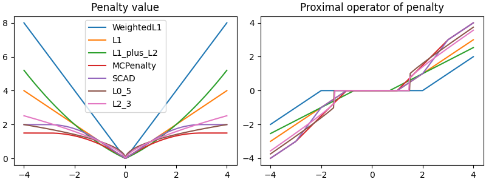

Note
Go to the end to download the full example code
Value and proximal operators of penalties#
Illustrate the value and proximal operators of some sparse penalties.
# Author: Mathurin Massias <mathurin.massias@gmail.com>
import numpy as np
import matplotlib.pyplot as plt
from skglm.penalties import WeightedL1, L1, L1_plus_L2, MCPenalty, SCAD, L0_5, L2_3
penalties = [
WeightedL1(alpha=1, weights=np.array([2.])),
L1(alpha=1),
L1_plus_L2(alpha=1, l1_ratio=0.7),
MCPenalty(alpha=1, gamma=3.),
SCAD(alpha=1, gamma=3.),
L0_5(alpha=1),
L2_3(alpha=1),
]
x_range = np.linspace(-4, 4, num=300)
fig, axarr = plt.subplots(1, 2, figsize=(8, 3), constrained_layout=True)
for pen in penalties:
axarr[0].plot(x_range,
[pen.value(np.array([x])) for x in x_range],
label=pen.__class__.__name__)
axarr[1].plot(x_range,
[pen.prox_1d(x, 1, 0) for x in x_range],
label=pen.__class__.__name__)
axarr[0].legend()
axarr[0].set_title("Penalty value")
axarr[1].set_title("Proximal operator of penalty")
plt.show(block=False)
Total running time of the script: (0 minutes 2.529 seconds)